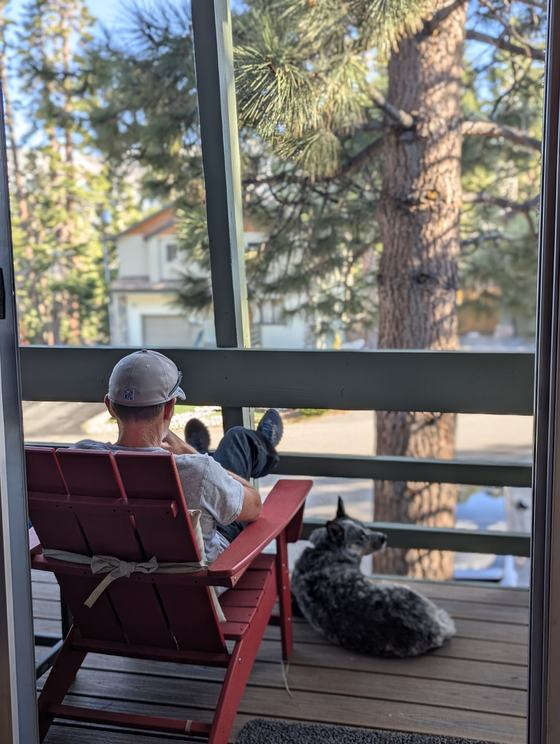

LinkedIn · Sep 2026
"AI made code cheap to write. It didn't make being wrong any cheaper."
Read the postAI coding agents, made trustworthy · any provider
I help engineering teams put their AI coding agents on a hardened process: gates that check outcomes, sub-agents with small contexts, an outer loop that reviews every PR, and evals built from real feedback. Short sprints, in your repo, on your tools.
One engagement at a time. 1 and 2 week engagements, remote or onsite. [Calendly link]
rails new to hundreds of paying customersThe problem
Agents are very good at producing code that looks right. The tests pass, the diff is tidy, the PR description is confident. What goes wrong is upstream: the agent misread the ticket, tested that a method was called instead of what it did, or shipped a feature nothing downstream can use.
Safe, but you gave back most of the speed you bought.
Fast, until a quiet failure reaches a customer.
There is a third option: make the process catch it. Rules the agent actually follows, gates that check outcomes, and a loop that tightens itself every time something slips. A few rules from my own repo:
Offers
Fixed scope, fixed price. No long transformation programs, no retainer required.
A straight answer on where your AI coding workflow will hurt you, and a ranked list of fixes.
Your team ships agent-built PRs through a harness it trusts: inner loop, outer loop, gates, and evals.
Not sure which fits? The 20-minute call is for exactly that. If none of them fit, I will say so.
How it works
This is the setup I run on my own product every day. In a sprint I adapt it to your repo, your tools, and your team's habits. It's plain files in your repo, so it works with whichever coding agent you use.
Proof
Live case study
A personal-finance app with an AI assistant named Finn, at getbased.app. I build it with the harness above, a few hours a day, as a product owner more than a programmer.
With this setup, I don't even look at code any more.
Full write-up: [case study link]
rails new to hundreds of paying customers: a double-entry ledger with 1M+ entries and $20M+ in ACH volume. I know the owner's side of shipping software."AI made code cheap to write. It didn't make being wrong any cheaper."
Read the post"To everyone letting Claude / Grok / Copilot write their unit tests: please pause for a second."
Read the post and the comments
About
I started as an electrical engineer (BS from UCLA, MS from CSUN), first as a satellite engineer at General Dynamics, then as a principal engineer and integrated product team lead at LinQuest, building satellite network simulation for US Space Command.
In 2012 I founded Rentables and took it from rails new to hundreds of paying customers. From 2018 to 2024 I was VP of Software Engineering at Broadvoice, where the work I'm proudest of was process: one ticket, one deployment, and a team of 40+ engineers across six time zones that kept an eNPS of 90+ while it grew 650%.
These days I live in the LA area, own rental properties, and get up to Mammoth whenever I can. Most days I'm building Based Budget with AI agents. On the side, my wife Christy and I make Pets Forever Storybooks.
Consulting is part-time on purpose. I take one engagement at a time, keep it short, and give it my full attention. If your team wants AI agents it can trust, I'd like to hear what you're working on.
FAQ
Part-time by design. I run one engagement at a time, roughly 10 to 15 hours a week, scheduled as 1 or 2 week sprints. Next openings start in January 2027, and I’m booking them now.
Whatever your team already uses: Claude Code, Cursor, Codex, Copilot, Grok, or a mix. My daily driver right now is the Grok Build CLI, and I used Claude Code before that. The harness is plain files in your repo (commands, agent definitions, rules, gates, and evals), so it keeps working if you switch providers.
Remote by default. For the 2-week Sprint I can also work onsite, in LA or elsewhere, with travel and lodging covered by you. Onsite works best for the kickoff and the two working sessions.
Yes. A mutual NDA before I see any code is standard. I work inside your environment with the access you grant, and nothing leaves it.
Rules alone often do get ignored, usually because one agent is holding too much context. Small sub-agents, gates that block on outcomes, and an outer loop that checks the work are what make rules stick. If you're skeptical, start with the Readiness Review and judge the findings.
The harness writes the code. My job is to set it up so your engineers trust what it produces, and to leave them able to run and improve it without me.
Every Sprint starts with a baseline and ends with before and after numbers: how much of the work goes through the agents, PR throughput and review time, and what the gates caught. If you want those numbers on one page your leadership checks weekly, I can add a small dashboard. Ask on the call.
A 30-day check-in is included. After that you can book another sprint if you want one. There is no retainer.
Not as offers. I've led a zero-downtime migration to AWS, but projects like that take months and I keep engagements short.
Contact
Tell me what your team is building and how agents fit in today. You'll leave with at least one thing to try, whether or not we work together.